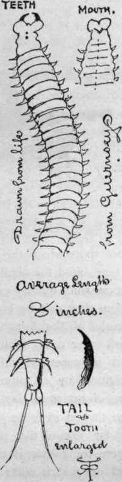
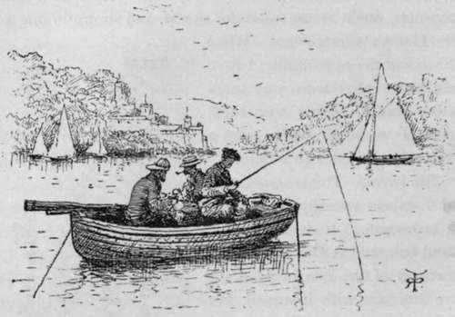
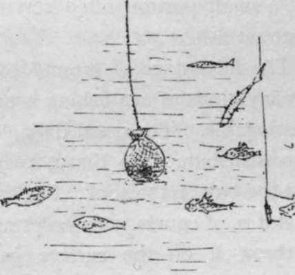
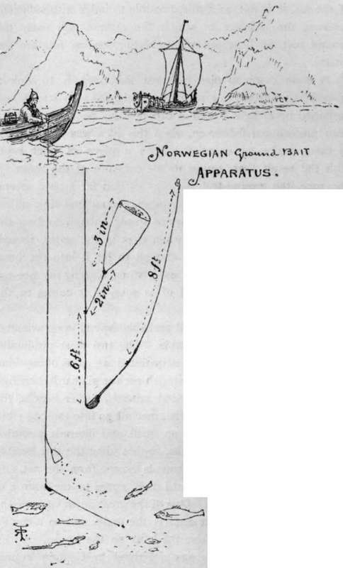
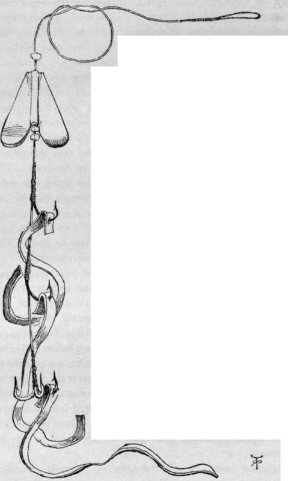

The Varm
Description
This section is from the book "Sea Fishing", by John Bickerdyke. Also available from Amazon: Sea Fishing.
The Varm
This is sometimes, and I expect wrongly, called the sea tapeworm. It is a Channel Island bait, and is also used by the fishermen of the Isle of Man. I have not met with it myself, but a friend tells me that of all natural baits it is the most deadly. It is found among rocks and under stones and gravel, and sometimes grows to a length of two feet. It puts on iridescent hues, and is reputed very deadly if used on whiffing tackle for pollack or coal-fish, a small portion often serving to attract fish.
The Varm.
The advantage of ground bait in many kinds of sea fishing is unquestionable. The usual difficulty is to distribute it so that it keeps near the bait on the hook. In dead water it is, of course, only necessary to throw it on the surface just above the hook bait, when it sinks straight to the bottom in the right place ; but in many of those spots which the experienced sea fisherman would select as best suited for obtaining sport, there is more or less of a stream which quickly carries away any fragments of ground bait before they can be brought under the notice and into the mouths of the fish. In fresh-water rivers ground bait is generally either weighted by an admixture of stones or clay, or else thrown in loose just so far above the spot where the fishing is carried on that it sinks to the bottom before being carried out of the swim. But, owing to the depth of the sea, it is not, as a rule, possible to judge with sufficient accuracy the distance to which the current will carry the ground bait, at least not where bottom-feeding fish are the quarry.
Ground Bait.
Ground-Bait Net In Use.
A more common plan with sea fishermen is to sink a ground-bait mixture in a net or bag weighted with stones and sustained by as light a cord as can possibly be used. I have seen professional fishermen, when this idea was first mooted to them, make an experiment with a piece of thick rope, with the result that, owing to the pressure of the water on the rope, the ground-bait net was carried far astern, several fathoms beyond our tackle. A piece of stout cod line, unless it is very old, is, as a rule, quite strong enough to bear the weight of a ground-bait net when it is in the water, though it may not always be strong enough to lift it into the boat. Therefore, if the cod line is used, when hauling the net up, its neck should be laid hold of as soon as it comes to the surface.
The contents of the net will probably depend upon whatever suitable substances are available. The two most productive ground baits with which I am acquainted are crabs of any kind smashed up, and the guts of oily fish such as pilchards, herrings, or mackerel. Mussel shells, seed mussels, oyster beards, the liver of any fish, in fact any offal, may all go into the bag ; but it is well to chop everything up small, and intermix pounded shells, raw potatoes and the like, so that when the line bearing the net is sharply pulled, fragments escape from the net, and the fish work up the tide until they come to the source of this unusual food supply. One of the great advantages of the ground-bait net is that it attracts the crabs, and to a certain extent keeps them away from the baits on the hooks. A plan somewhat similar to this was described by Captain Young, the author of ' Sea Fishing as a Sport,' in the ' Field ' some years ago. He said that the professional fishermen west of the Start very frequently placed a stone in the foot of an old stocking and half filled the leg with the guts of pilchard or other oily fish, lowering the arrangement to six feet from the ground. The globules of oil which oozed through the stocking were believed to be exceedingly attractive.
Norwegian Ground-Bait Cone.
A reader of a previous book of mine on sea fishing, Mr. Arthur Mountain, of Grimsby, very kindly sent me a description of an apparatus used by the Norwegian fishermen for lowering ground bait to the bottom, placing it with certainty close to the hook bait. A small, leather, cone-shaped receptacle, about three inches deep, is attached above the lead on the fishing line by two inches of line. The cone is placed about six feet above the lead, beyond which is a piece of snooding of about eight feet, bearing at the end one hook. This cone is filled with pounded crab and carefully placed in the water ; then the lead is lowered, and the upward pressure of the water keeps the cone in a perpendicular position during its descent. As soon as the downward course of the lead is stopped, the cone turns face downwards and discharges its contents over the bait on the hook. The fish principally caught were codling, the bait being soft crab ; the water was very clear. Mr. Mountain wrote that he did not think this plan would answer well in a strong tideway, but even if the ground bait did not fall over the bait, it would probably collect fish and cause them to feed. The measurements may be varied according to circumstances.
For surface-feeding fish it is obviously of little use to lower a net to the bottom. I have heard of a basket or hamper filled with refuse being hung just over the rocks to attract bass, and that has certainly had the effect of collecting quantities of crabs which could be shaken off and pounded up for additional ground bait. One of the most successful bass fishers at Tenby, whose favourite hook bait is skate's liver, makes it a practice to place a quantity of the liver in a sack and lower it for a foot or so in the water where he is fishing. What must also be termed a surface ground bait is a mixture of salted infant shrimps, known as chervin, which is used at Jersey to attract grey mullet. A few spoonfuls mixed with water are thrown in as may be necessary.
Ground baiting is not unknown in Australia, America, Fiance, particularly in the Mediterranean. At San Sebastian a mixture of clay, the heads of sardines, and potatoes is made into balls, and thrown in for the benefit of the grey mullet. Many places on our coast will be found ready ground-baited, by the sewers of towns, the small injured fish thrown over by trawlers, the guts of fish thrown in harbours, and all and sundry animal and vegetable refuse which finds its way into the ocean from sea-fronts of not too well-regulated watering-places.

Continue to:
- prev: Whelks
- Table of Contents
- next: Artificial Baits
Tags
fishing, hooks, bait, fishermen, spanish mackerel, mackerel fishing